15 conferences · 180 teams · 2026 regular season
NCAA 180 Week 9
117.23Avg score
118.36Median
3Unbeaten
5Winless
Week 9 awards One winner across all 180
High score
186.08pts
Davidson
YikesOnBikes · Pioneer
over Holy Cross

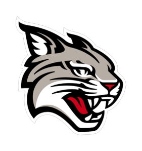
Biggest blowout
+125.98margin
Tulsa
Raidersforte · Sun Belt
164.68–38.70 over UAB

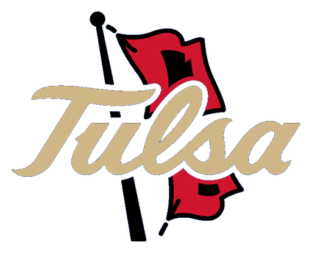
Closest game
0.28margin
Boston College
eperedetto · ACC
119.56–119.28 over Georgia Tech


Bad beat
163.96pts in a loss
Richmond
fballfreek80 · Big Sky
Lost to Youngstown State, 172.20

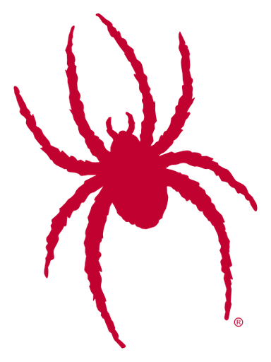
Lucky win
49.20pts in a win
Northwestern
kfitch3p · Big Ten
Beat Michigan State, 43.50

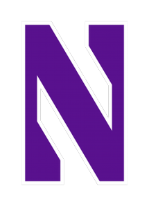
Low score
38.70pts
UAB
Fr3shBC11 · Sun Belt
vs. Tulsa

Great coaching
99.7%of max points
Memphis
yoboihawks · Sun Belt
143.58 of a possible 143.98; beat Georgia Southern by 27.04

Biggest upset
25%pregame win chance
Louisville
Campbell8 · ACC
Beat Virginia 117.30–103.90

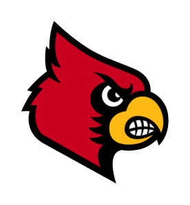
Exceeding expectations
+52.07pts over projection
Fresno State
Vikes1819 · Mountain West
Scored 171.18, projected 119.11 at kickoff


You beat yourself
92.86pts left
Alabama A&M
B41Pakman · HBCU
Scored 51.40, best lineup 144.26, lost to North Carolina A&T 122.40


Top 25 Score (first-place votes)
| Rk | Team | Score | |||
|---|---|---|---|---|---|
| 1 | – |   | Washington State9-0 · Pac-12 | +2.00 | (4) |
| 2 | ▲2 |  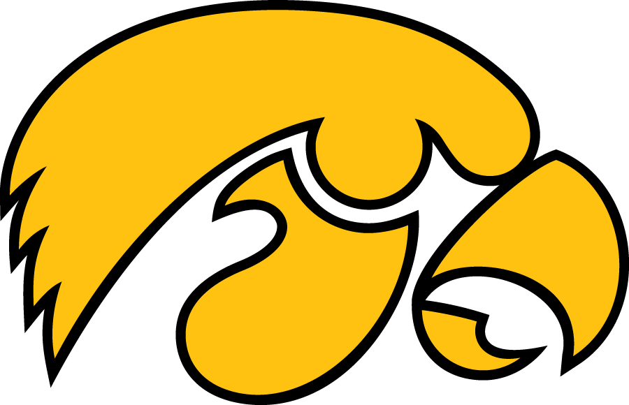 | Iowa8-1 · Big Ten | +1.73 | |
| 3 | ▲2 |   | Youngstown State9-0 · Big Sky | +1.66 | (1) |
| 4 | ▲2 |   | Middle Tennessee State9-0 · CUSA | +1.58 | |
| 5 | ▲6 |  | Baylor7-2 · Big 12 | +1.56 | (1) |
| 6 | ▲2 |  | Syracuse7-2 · Big East | +1.54 | |
| 7 | ▲5 |   | Old Dominion8-1 · Wild | +1.53 | |
| 8 | ▼6 |  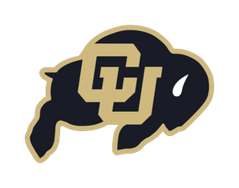 | Colorado8-1 · Pac-12 | +1.52 | |
| 9 | ▼6 |  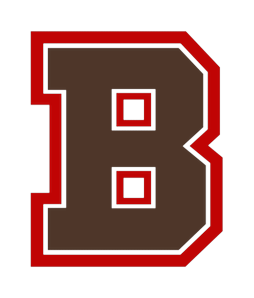 | Brown7-2 · Ivy | +1.52 | |
| 10 | – |  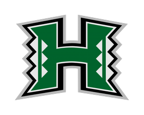 | Hawaii7-2 · Mountain West | +1.50 | |
| 11 | ▲2 |  | Clemson8-1 · ACC | +1.41 | |
| 12 | ▼3 |  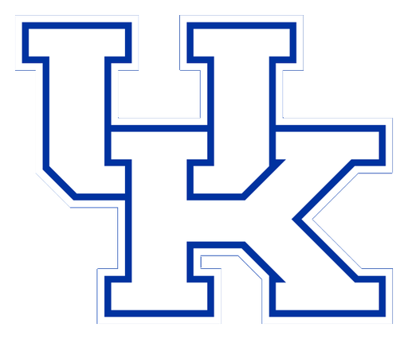 | Kentucky8-1 · SEC | +1.38 | |
| 13 | ▲2 |  | Georgetown7-2 · Ivy | +1.36 | |
| 14 | ▲4 |   | Arizona State7-2 · Pac-12 | +1.34 | |
| 15 | ▼8 |  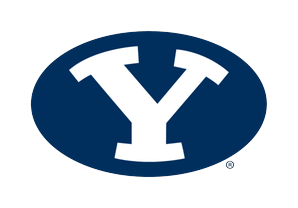 | BYU8-1 · Mountain West | +1.32 | |
| 16 | – |   | William & Mary7-2 · Big Sky | +1.30 | |
| 17 | – |  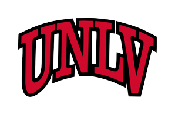 | UNLV8-1 · Mountain West | +1.29 | |
| 18 | ▲3 |   | Southern Miss7-2 · Sun Belt | +1.24 | |
| 19 | ▲1 |  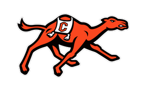 | Campbell8-1 · Pioneer | +1.23 | |
| 20 | ▲2 |   | Southern7-2 · HBCU | +1.18 | |
| 21 | NEW |  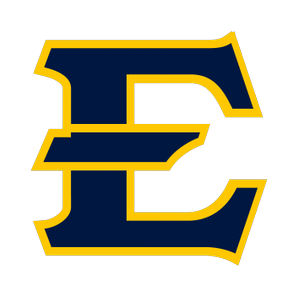 | ETSU6-3 · Ohio Valley | +1.16 | (1) |
| 22 | ▼8 |  | Chattanooga7-2 · Ohio Valley | +1.10 | |
| 23 | NEW |   | Portland State6-3 · Big Sky | +1.09 | (1) |
| 24 | NEW | | Tulsa7-2 · Sun Belt | +1.04 | |
| 25 | NEW |   | NC State7-2 · ACC | +1.03 |
Others receiving votes: Cornell +1.03, Missouri +1.00, Illinois +1.00, Georgia State +0.95, Kansas State +0.95, North Carolina A&T +0.92, Colorado State +0.91, Coastal Carolina +0.86, Nebraska +0.85, Montana +0.83, North Alabama +0.82, Monmouth +0.67, South Carolina +0.62
Dropped out: Kansas State, Pittsburgh, Coastal Carolina, Montana
Full pollTop scores Week 9
- 1DavidsonYikesOnBikes · Pioneer · def. Holy Cross186.08
- 2Montana StateElwayluva7 · Big Sky · def. Rhode Island184.58
- 3#1 Washington Statechzhead412 · Pac-12 · def. Colorado174.58
- 4#18 Arizona Statewrightc214 · Pac-12 · def. Stanford174.08
- 5#5 Youngstown Statemssullivan2022 · Big Sky · def. Richmond172.20
- 6ETSULMarkiewicz04 · Ohio Valley · def. Eastern Kentucky171.48
- 7Fresno StateVikes1819 · Mountain West · def. Boise State171.18
- 8#4 IowaSchuflakka · Big Ten · def. Indiana170.64
- 9#15 Georgetownccassidy · Ivy · def. Colgate170.20
- 10#12 Old Dominionolddominion2020 · Wild · def. South Dakota167.46
Conference average Pts per team
- Ivy123.4
- Big Sky123.4
- Wild122.0
- CUSA121.2
- ACC121.1
- Ohio Valley119.9
- Mountain West119.0
- Pac-12117.5
- Big East115.7
- Sun Belt115.7
- Pioneer115.0
- Big Ten114.6
- Big 12114.2
- SEC110.1
- HBCU105.9
Bars start at 101 points.
Top starters By position
- QBJordan LoveGB · started in 9 of 15 leagues36.18
- RBKenneth Walker IIIKC · started in 15 of 15 leagues36.30
- WRPuka NacuaLAR · started in 15 of 15 leagues34.00
- TEDarren WallerCAR · started in 3 of 15 leagues23.00
- KKa'imi FairbairnHOU · started in 5 of 15 leagues17.00
- DEFSan Francisco 49ersSF · started in 4 of 15 leagues21.00